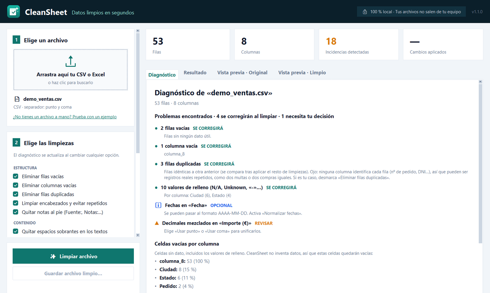

Duplicados y filas vacías
3 filas repetidas→1 filaAvisa si el archivo no tiene una columna identificadora, porque dos multas o dos compras iguales pueden ser registros reales.
CSV · Excel · LibreOffice
CleanSheet encuentra y corrige duplicados, filas vacías, espacios, fechas en mil formatos y números guardados como texto. Te explica cada cambio antes de hacerlo y nunca toca tu archivo original.
Programa para Windows. Funciona sin Internet: tus datos no salen de tu equipo.
Probado con datos públicos reales del INE, el Banco Mundial, el Ayuntamiento de Madrid, el Estado de Washington, NYC Open Data y el repositorio UCI, en un portátil Windows.
Qué corrige
Los mismos que aparecen al exportar del ERP, al juntar listados de varias personas o al descargar datos oficiales. Cada uno se detecta, se cuenta y se te enseña antes de tocar nada.
3 filas repetidas→1 filaAvisa si el archivo no tiene una columna identificadora, porque dos multas o dos compras iguales pueden ser registros reales.
"··Ana López·"→"Ana López"Quita los espacios invisibles que impiden cruzar datos, y pone nombre a las columnas vacías o repetidas.
N/A · Unknown · –→(vacío)Distingue un relleno de un dato: «NA» en una columna de códigos de país es Namibia y se respeta.
14/03/2025→2025-03-14Las fechas ambiguas como 03/04/2025 no se tocan hasta que tú eliges si son día/mes o mes/día.
"47.385.107"→47385107Al guardar en Excel se convierten en números que se pueden sumar. Los códigos postales como 02001 conservan su cero.
Fuente: INE→(fuera)Encuentra dónde empieza la tabla real en los archivos oficiales y quita las líneas de «Notas:» y «Fuente:» del final.
Cómo funciona
Una ventana con todo a la vista. Nadie de tu equipo necesita formación para usarla.

Privacidad
Las herramientas online te piden subir el archivo a un servidor ajeno. Con datos personales eso supone un riesgo y papeleo de protección de datos. CleanSheet hace todo el trabajo en el propio equipo.
Para quién
Exportaciones del ERP o del banco listas para importar sin errores de formato.
Listas de contactos sin duplicados ni espacios antes de cargarlas en el CRM o el mailing.
Pedidos y catálogos de varias plataformas unificados en fechas, importes y decimales.
Datos del INE y de portales de datos abiertos listos para analizar, sin títulos ni notas.
Te enseñamos en diez minutos qué encuentra CleanSheet en uno de tus archivos, en tu propio ordenador y sin que tengas que enviarnos los datos.